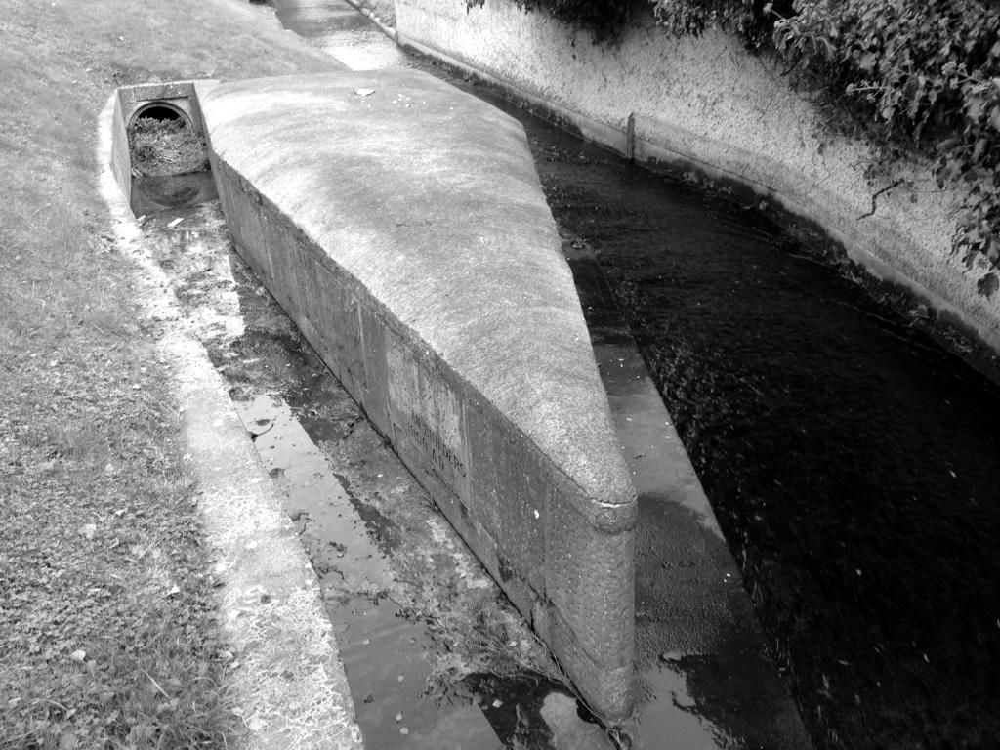
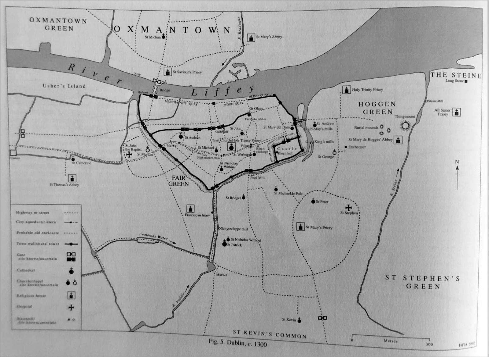

History · 1245
The second diversion
The Stone Boat splits the river for St Thomas’s Abbey.
The second diversion
The second diversion was no less ingenious. In 1245, at what is now Harold’s Cross, the stream was split by the Tongue, a stone shaped like the bow of a boat and known locally as the Stone Boat. It sent part of the Poddle’s water west to St Thomas’s Abbey.
You can still see both diversions. The first is no longer used, but its workings can be seen at Balrothery, near Tymon Park, just outside the M50. The Tongue, or Stone Boat, is still in the river near Mount Argus.

